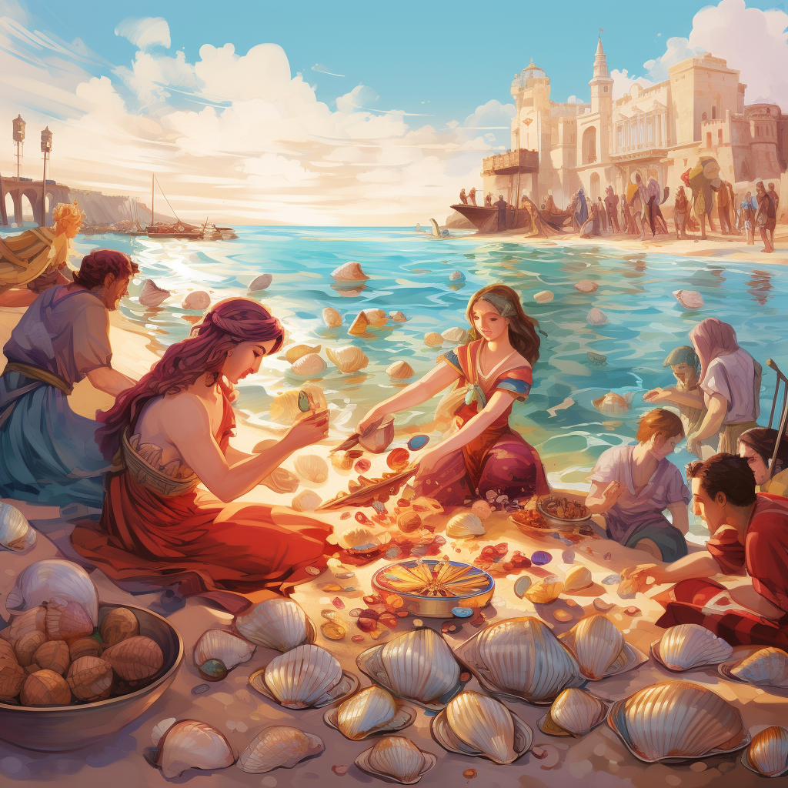

Introduction
Name: Velloria
Location: The Floating Archipelago
Existing Period: 3,000 BCE - 1,500 BCE

The ancient civilization of Velloria is a fantastical creation that never existed in reality. It thrived on a series of isolated, floating islands in the midst of a vast, uncharted ocean known as the Floating Archipelago. The civilization of Velloria is said to have existed from 3,000 BCE to 1,500 BCE, though no concrete evidence of its existence has ever been discovered.
Velloria was known for its remarkable architectural feats, as the inhabitants of these floating islands constructed intricate bridges and elaborate cities that seemed to defy gravity. Their society was believed to be highly advanced in terms of engineering and city planning, even though it was isolated from the rest of the world.
The Vellorians were rumored to possess a unique energy source that enabled their islands to float, harnessing the power of the mysterious "Levistones" that were said to be hidden deep within the archipelago's core. They were also known for their advanced knowledge of herbal medicine and alchemical practices, which were passed down through generations.
The civilization of Velloria was characterized by its reverence for the natural world and its spiritual connection to the ocean, which they believed was a divine entity. Their culture was deeply rooted in the worship of sea deities, and they held grand ceremonies to honor the tides and aquatic life.
Culture of Velloria
The culture of Velloria was deeply rooted in their unique environment – the Floating Archipelago. The isolation of their islands led to a strong sense of unity and self-sufficiency among the Vellorians. Here are some aspects of their culture:
- Communal Living: Vellorian society was highly communal. Families lived in close-knit communities and shared resources, with a focus on cooperation and sustainability.
- Art and Architecture: Vellorians were known for their breathtaking architecture and art. Their structures featured intricate designs, often incorporating elements inspired by the sea, with shell motifs, coral patterns, and wave-like curves.
- Ceremonial Festivals: The Vellorians celebrated their deep connection to the ocean with grand ceremonial festivals. These included dances, music, and rituals honoring the tides and sea deities. Offerings of colorful seashells and precious stones were made during these events.
 - Agriculture and Aquaculture: Due to their limited land, Vellorians excelled in advanced hydroponics and aquaculture. They grew unique underwater crops and harvested a variety of marine species for their sustenance.
Language - Aqualith
The Vellorian language, known as "Aqualith," was an intricate and melodious tongue. It had a fluid, harmonious quality that mirrored the rhythms of the ocean. Aqualith was both spoken and written, using a unique script inspired by the undulating movements of water. Vellorian poetry and literature were highly regarded, with many poems and prose works composed in Aqualith. These works often celebrated the beauty of their floating archipelago and the majesty of the ocean. Aqualith was also the language used in their religious ceremonies and rituals. These sacred utterances and songs were considered to be a direct way to connect with their sea deities and seek their blessings.
Religion of Velloria
Vellorian religion was deeply tied to the sea and their belief in divine sea deities. They worshipped a pantheon of gods and goddesses associated with different aspects of the ocean and its mysteries:
- Aquanara: The goddess of tides and currents, believed to control the ebb and flow of life itself.
- Neridus: The god of abundance and fertility of the sea, thought to bless the Vellorians with plentiful harvests.
- Coralia: The goddess of marine life and guardian of the underwater ecosystems, responsible for the balance of aquatic life.

- Levitas: The god associated with the Levistones, believed to bestow the power of levitation upon the islands.
In the mystic realm of Velloria, where sea and sky coalesced, a civilization flourished with unparalleled grace. As we journey deeper into its depths, we unveil a culture intertwined with the mysteries of the ocean, a language that sang like the waves, and writings that etched the whispers of a bygone era onto the pages of history. Join us in our exploration of Velloria, a world where imagination knows no bounds, and the wonders of a unique, ancient civilization await discovery.